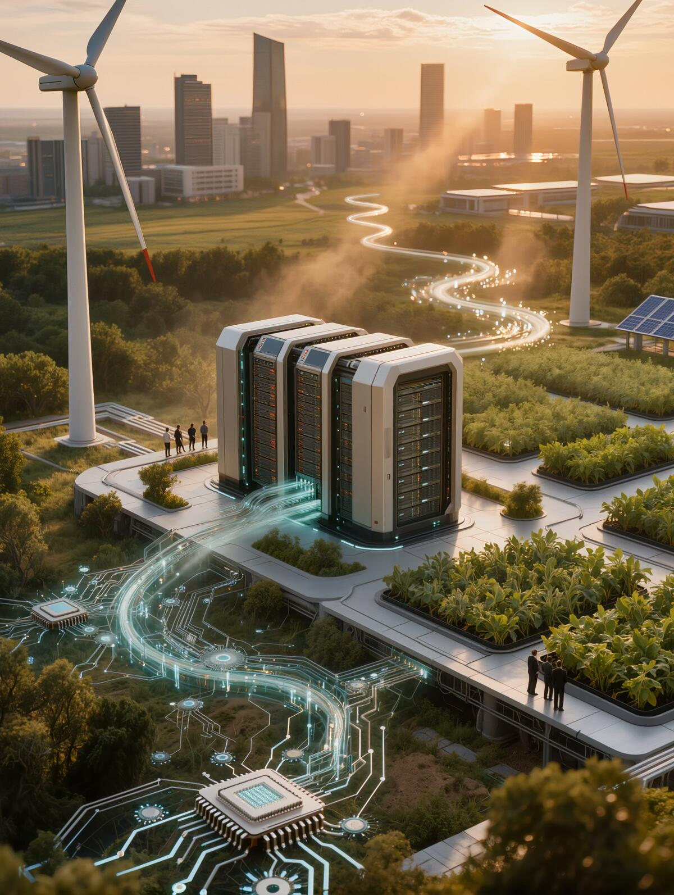

AI-Driven Circular Systems

Context
The rapid expansion of Large Language Models and generative AI has triggered an unprecedented surge in data center energy consumption, threatening global carbon neutrality targets. As AI scales, its environmental footprint has become a central concern for sustainability science.
The Problem
Computational "brute force" scaling laws are ecologically unsustainable. Current training regimes prioritize accuracy over energy-per-inference metrics, creating a massive digital carbon footprint. Hardware supply chains for GPUs and TPUs rely on rare-earth extraction with limited recovery pathways.
Emerging Solutions
Research directions include federated learning architectures that reduce centralized compute loads, neuromorphic chips that mirror biological efficiency, and model pruning techniques that minimize joules per inference. In parallel, AI is being deployed as an optimization tool for circular supply chains and lifecycle analysis.
Circular Solution Pathway
"Developing neuromorphic hardware and algorithmic pruning techniques that mirror biological efficiency, minimizing the joules per operation and repurposing data center waste heat for urban agriculture and district heating."